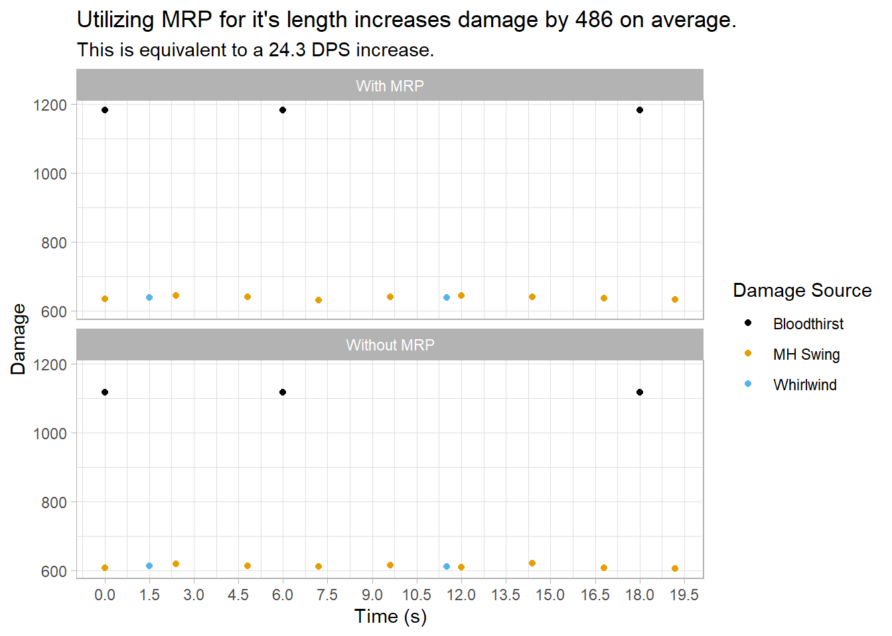
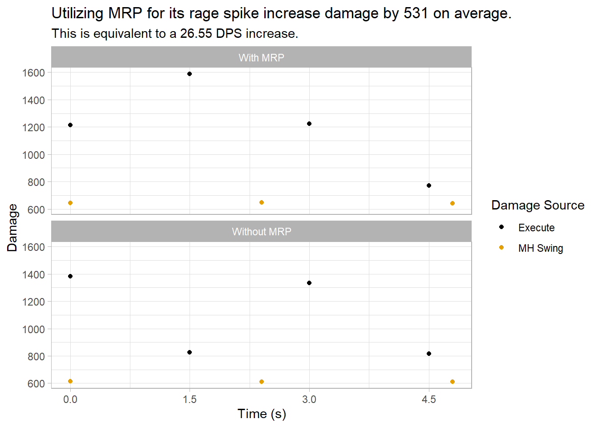

Chapter 5 Cooldowns
Much of DPSing in WoW Classic is about timing your offensive cooldowns. In order to utilize these most efficiently, we need to have a good grasp of two main factors:
- What the kill time for the boss is.
- The highest DPS phase in any given fight.
The most efficient way to utilize cooldowns is to ensure they are up throughout the entire fight, which can be achieved by having the kill time for the boss be equal to or lower than the duration of your cooldowns. While this is can be done for Recklessness, it is much more likely to happen for Death Wish (which lasts twice as long). Failing that, the player must identify what the highest DPS phase of the fight is, which while straightforward for single target fights (Execute phase), is not always the case for cleave fights. We’ll recall that the DPR (and thus DPS) potential of Whirlwind is very high in cleave situations, especially depending on your weapon. Therefore, it’s up to the player - based on his current gear setup - to identify whether utilizing cooldowns for the cleave portion of the fight is better than saving it for the Execute phase if these two do not overlap.
Another important factor is that cooldowns are synergistic. This means that utilizing Death Wish in conjunction with Recklessness results in a much greater DPS increase than staggering both. Moreover, as a rule of thumb, it is better to utilize your cooldowns too early rather than too late - seconds left on your buffs after the boss dies do not add to your damage.
5.1 Death Wish
Death Wish (DW) is a 3 minute cooldown which costs 10 rage, lasts 30 seconds, and increases the player’s physical damage by 20% while also granting Fear immunity, but reducing armor and all resistances by 20%. In a pure single target fight, DW should expire just as the boss dies for maximum efficiency. Like all cooldowns other cooldowns, it is particularly effective when coupled with others cooldowns.
5.2 Recklessness
Recklessness (Reck) causes most (all) attacks the player makes to be critical for the next 15 seconds, but all damage taken is increased by 20%. It follows the same general cooldown rules outlined above, with the caveat that this will highly increase the threat done by the applier. As such, it is recommended that the player either coordinates with the main tank in its usage, or be sure that they will not surpass the tank in threat.
5.3 Trinkets
5.3.1 Diamond Flask
Diamond Flask (DF) is a warrior class quest reward which increases your strength by 75 for one minute while also giving the player 9 health every 5 seconds, on a 6 minute cooldown. This is an exceptionally strong cooldown which should be utilized in all fights lasting one minute or less, as the strength buff translates to an AP increase of 150. Since this AP increase is static throughout the duration of the buff, we can simply average it over the fight duration to find its relative AP increase for any given fight length. Knowing this, we can calculate whether we should utilize DF on a fight over other trinkets if we know their equivalent attack power value.
5.4 Mighty Rage Potion
Mighty Rage Potion (MRP) is a potion on a 2 minute cooldown, which when utilized increases the player’s rage by 45 to 75 and their strength by 60 for 20 seconds. This rage increasing effect makes MRP utilization a bit more nuanced than our other cooldowns: while its AP increasing effect would result in increased BT damage, its rage increasing effect would result in increased Execute damage. Therefore, a commonly asked question is: should the player utilize MRP for its AP increase over the duration of the effect, or should he utilize it for the rage spike during Execute phase? Let’s compare the following scenarios:
- A player with 305 weapon skill, a Chromatically Tempered Sword, 30% \(P(Crit)\), and 2000 AP utilizes MRP at \(t = 0\), outside of Execute phase.
- The same player utilizes MRP immediately after his first Execute when his rage is zero, and the Execute phase lasts for 5 more seconds.


As we can see, utilizing MRP to increase the damage of a single Execute will result in higher damage on average. It is important to note, however, that this method is subject to a lot more variance: missing one or more Executes will result in a much bigger DPS loss than if the player had utilized MRP for its length. Therefore, this is a situation where the player has to weigh risk versus reward. Moreover, if we extrapolate these results, we can clearly see that utilizing MRP for rage while getting the full length benefit of it’s AP increase is the most optimal method of utilization.
5.5 Bloodrage
Bloodrage is an ability that instantly generates 10 rage, and another 10 over 10 seconds. It has a one minute cooldown and puts the player in combat upon activation. There are a few main uses for Bloodrage:
- Activating Battle Shout before combat starts if not already buffed by it.
- Mitigating unlucky dodge streaks that might interfere with BT usage.
- As a “mini MRP” to increase Execute damage.
- If out of rage and knocked back, to get back in rage with Intercept.
This ability gives free rage, and thus should be utilized multiple times during fights which accomodate its usage.
5.6 Berserker Rage
Berserker Rage is an instant ability on a 30 second cooldown which causes the player to become immune to Fear and Incapacitate effects, while also generating extra rage when taking damage. It is important to note that since it lasts 10 seconds, activating the spell pre-emptively during “empty” GCDs will often enable the player to circumvent every Fear on a boss fight (such as Nefarian) depending on the timer, whereas activating it after being feared would cause the player to sometimes lose precious seconds being unable to attack. Many fights also contain predictable raid-wide damage, which are prime opportunities for the activation of Berserker Rage and thus increased rage generation.